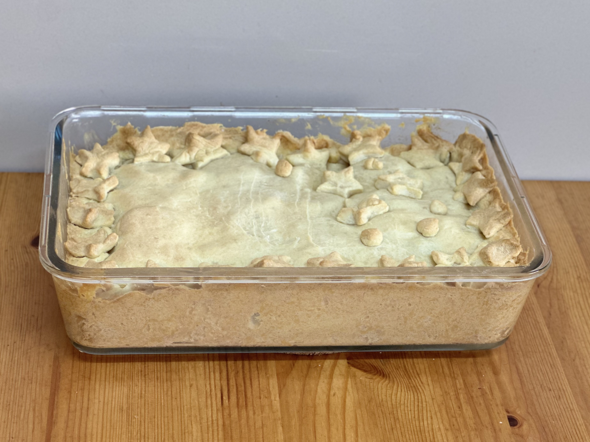

Massa semi-podre

Ingredientes
- 500 g de farinha de trigo
- 250 g de manteiga
- 10 g de sal
- 2 ovos
- 120 ml de água
Modo de preparo
- Misturar a farinha, a manteiga e o sal com a ponta dos dedos ou com o processador.
- Adicionar os ovos e metade da água e misturar mais um pouco.
- Juntar restante da água aos poucos, até dar o ponto (macia, mas sem grudar nas mãos).
- Cobrir com plástico filme e levar para refrigerar por 30 minutos antes de usar.
Observação:
- Durabilidade: 3 dias em refrigeração.
- Receita do curso "Torta de frango na marmita" da Eduk.